在不久前发表的两篇论文 [2] 中，我曾试图证明，如果我们认为四维连续区除了具有黎曼度规以外，还具有“远平行性”（Fernparal-lelismus），那么我们就可以得到引力和电的统一理论。
赋予引力场和电磁场以统一的意义，这在实际上也是可以做到的。与此相反，从哈密顿原理导出场方程却提供不出简单的和完全无歧义的方法。在更加严密的思考过程中，这种困难就更集中了。可是，从那时起，我成功地找到了一个令人满意的推导场方程的方法，下面我将报告这个方法。
§1 形式上的准备
我所利用的符号，是魏岑伯克（Weitzenböck）先生新近在他关于这个题目的论文中提出的 [3] 。因此n 个轴（Bein）中的第s 轴的v 分量用 s hν 来表示，而对应的标准的子行列式则用 s hν 来表示。局部的n 个轴全都是“平行地”安置着。平行的而且相等的矢量就是它们——对于它们的局部的n 个轴来说——具有同样的坐标。一个矢量的平行位移由公式
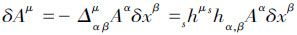
给出，其中 s hα,β 中的逗点应当表示在通常意义下的关于xβ 微分。由（对α 和β 不对称的）Δμ α β 构成的“黎曼曲率张量”恒等于零。
我们只把那种由Δ构成的［量］作为“协变微分”来使用。如果按照意大利数学家的习惯，它是用一个分号来表示，于是
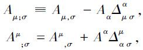
既然 s hν 以及gμ ν （≡ s hμ s hν ）和gμ ν 具有等于零的协变导数，那么这些量就可以作为一个同协变微分算符可以随意互换的因子。
同以往的标号法不同，我用下面的等式
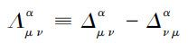
来定义张量
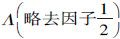
。［新的公式］同引进一种不对称的位移规则所必然要求的绝对微分运算中流行的公式的主要区别，就在于散度构成。令
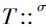
是任何一个带有上标σ 的张量，如果我们只写下同上标σ 有关的增项，那么上述张量的协变导数就是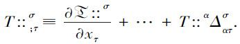
如果我们在对这个等式进行关于σ 和τ 的降秩之后，用行列式h 来乘它，那么在右边引进张量密度
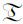
之后，我们就得到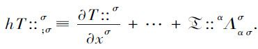
如果位移规则是对称的，右边最后一项就不存在。它本身是一个张量密度，从而右边所有其他项也是如此。按照通常的记号法，我们把它们记为张量密度 的散度，并写成
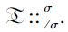
于是我们得到
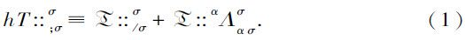
最后，我们还要引进一个符号，它——在我看来——增加了［公式的］直观性。我有时用在一个指标下划线的办法来表示有关指标的升降。因此，举例说吧，我用（
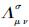
）来表示对应于（ ）的纯抗变张量，用（ ）表示对应于（ ）的纯协变张量。§2 几个恒等式的推导
恒等式
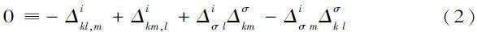
表示“曲率”转变为0.我们利用这个恒等式来推导张量Λ 所满足的一个恒等式。如果我们从（2）循环移置指标klm来构成两个等式，并且把这三个等式相加。于是，我们通过适当的归并，就直接得到恒等式
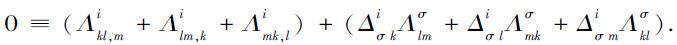
我们引进协变导数来代替Λ 的通常导数，这样来改变这个等式的形式。那么在把这些项适当加以归并之后，就很容易得出恒等式
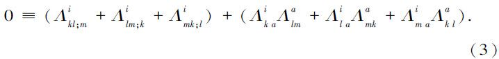
这正是Λ 可以由h 用上述方式来表示的条件。
通过对（3）进行一次降秩，并且为了简便起见，用φμ 代替
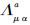
，我们得到一个对于以后很重要的恒等式：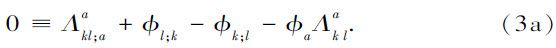
当我们引进对于k和l为反对称的张量密度
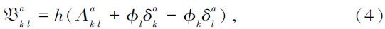
并且改变这个恒等式的形式，那么（3a）就化为简单的形式
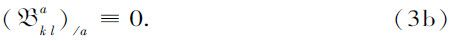
这个张量密度还满足第二个恒等式，它对于以后是有意义的。为了推导这个恒等式，我们在构成任何秩的张量密度的散度时，将按照下列位移法则：
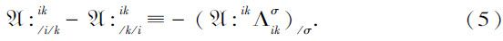
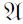
旁边的点表示任意的指标，它们在等式的所有三项中都是相同的，也就是说，这些指标同构成散度无关。（5） 的证明除了依靠定义公式
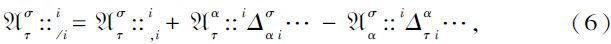
还特别依靠恒等式（2）。等式（5）同协变微分的位移规则紧密地联系在一起。为了完整起见，我也要说明它。如果T是任意的一个张量，为了简便起见，我略去它的指标，那么等式
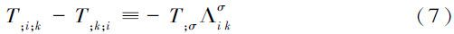
就该成立。
现在我们把恒等式（5）应用到张量密度
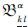
上，它的下标我们认为是升高的。我们就这样求得唯一的不平凡的恒等式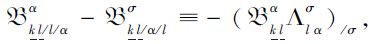
考虑到（3b），我们可以把它转化为下列形式
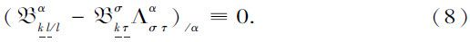
§3 场方程
在我发现了恒等式（3b）之后，我就很清楚，在我们所考察的那一种流形的自然限制的表征中，张量密度
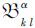
必定起着重要的作用。既然它的散度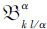
恒等于0,首先自然会想到提出这样的要求（场方程）： 另一个散度 也应当等于0.于是我们实际上得到这样一些方程，它们的一级近似给出熟知的真空中的引力场定律，就像从已有的广义相对论中所知道的那样。相反，这样就得不到可以使所有具有散度为零的φa 都满足那些场方程的关于φa 的矢量条件。这一点的根据是，在一级近似时，（由于通常的微分的交换可能性）恒等式
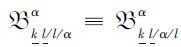
成立，但是右边的量由于（3b）而恒等于0.因此，也就是说这个方程组的四个方程
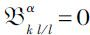
不再适用了。但是我已发现，这个缺陷能够很容易地加以补救，只要我们假定不是
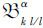
等于0，而是方程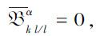
其中
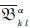
表示一个同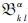
有任意小的偏差的张量 [4]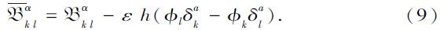
如果我们（按照指标α ）构成场方程的散度，那么，我们就正好得到麦克斯韦方程（全部在一级近似中）。此外，——由于我们趋近极限ε =0——我们仍旧得到方程
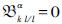
，它们在一级近似时正好给出真正的引力定律。因此，电和引力的场方程在一级近似上由表示式
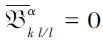
和必须趋近极限ε =0这个附加条件来正确地给出。于此，（以一级近似有效的）恒等式
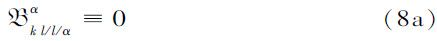
的存在必然要求在一级近似的场方程中出现这样一种分解，它一方面分解为引力定律，另一方面分解为电［磁］定律，而这种分解正好描述了自然界的一种如此显著的特征。
现在，必须使在一级近似上所获得的知识对于严密的考察有用。很清楚，我们在这里也必须从一个对应于（8a）的恒等式出发，显然这就是恒等式（8）。特别因为两个恒等式所依据的，除了（3b）之外，就是微分算符的一个对换规则。
因此，我们必须把
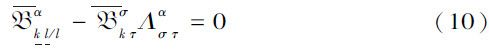
规定为场方程，并附加规定（即在运算“/α ”进行之后）趋近［极限］ε =0.如果我们把（10）的左边用
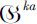
来表示，那么我们就得到场方程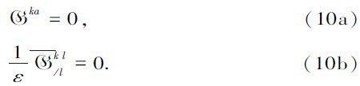
考虑到（8）和（9），（10b）立即给出
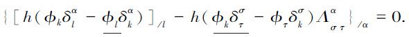
现在我们为简便起见，暂时引进张量密度
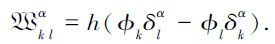
根据（5），得到
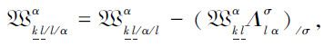
那么这样算出的方程也可以写成形式
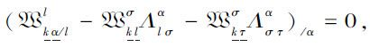
在这个方程中，最后两项相消。通过直接的计算得到
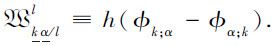
因此，改变了形式的方程（10b）为
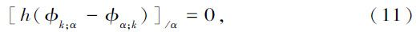
这个方程组同
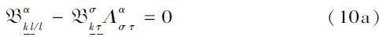
一道构成一个完整的场方程组。
假如我们不从（10）而直接从（10a）出发，那么我们就得不到“电磁”［场］方程（11）。而且我们也就失去方程组（11）和（10a）相互一致的任何基础。但是，既然原来的方程组（10）是关于16个量 s hμ 的16个条件，所以看来这必能保证这些方程相互一致。在（10）的16个方程中，由这些方程的普遍协变性，必定有4个恒等式存在。因此，在（11），（10a）的20个场方程中，一共有8个恒等的关系式，当然，在本文中我们只明显地给出其中的4个。
已经指出，方程组（10a）在一级近似上包含引力［场］方程，方程组（11）（结合一个矢势的存在）［给出］真空中的麦克斯韦方程。我也能够证明，反过来，对于这些方程的每一个解，都存在一个满足方程（10a）的h 场 [5] 。通过对方程（10a）的降秩，我们得到关于电势的散度条件
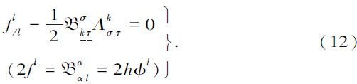
对场方程（11），（10a）的结果的更深入研究必定会表明，黎曼度规结合远平行性是否确实给出对于空间的物理性质的合适理解。根据我们这里的研究，这未必是不可能的。
向H.明兹（Müntz）博士先生致谢，这对我是一项愉快的任务，他根据哈密顿原理对中心对称问题作了艰辛的严格的计算。他的这项研究成果使我接近发现这里所走的道路。我在这里也要感谢“物理基金会”，它使我在去年有可能聘请一位像格罗梅尔（Grommer）博士先生那样的研究助手。
在校样上的补充 本文中所提出的这些场方程，同其他可设想的方程在形式上相对比，其特征可以表明如下。依靠恒等式（8）可以做到，这16个量 s hν 不仅可以服从16个，而且服从20个独立的微分方程。“独立”一词在这里是这样理解的： 即使这些方程之间存在着8个恒等的（微分）关系式，也没有一个方程可以从其余方程得出。
[1] 译自1929年1月出版的《普鲁士科学院会议报告，物理学数学部分》（Sitzungsber. preuss. Akad. Wiss., Phys.-math. Kl. ）1929年，I、II期合刊，2-7页。——编译者注。
[2] 《普鲁士科学院会议报告，物理学数学部分》，1928年，VIII期，217-221页；XVII期，224-227页。——原注。
[3] 《普鲁士科学院会议报告，物理学数学部分》，1928年，XXVI期，426页。——原注。
[4] 为了消除在有奇点存在的情况下出现的退化（Degeneration），这正是经常使用的方法。——原注。
[5] 只有在讲到一级近似的线性方程时，这一切才是正确的。——原注。